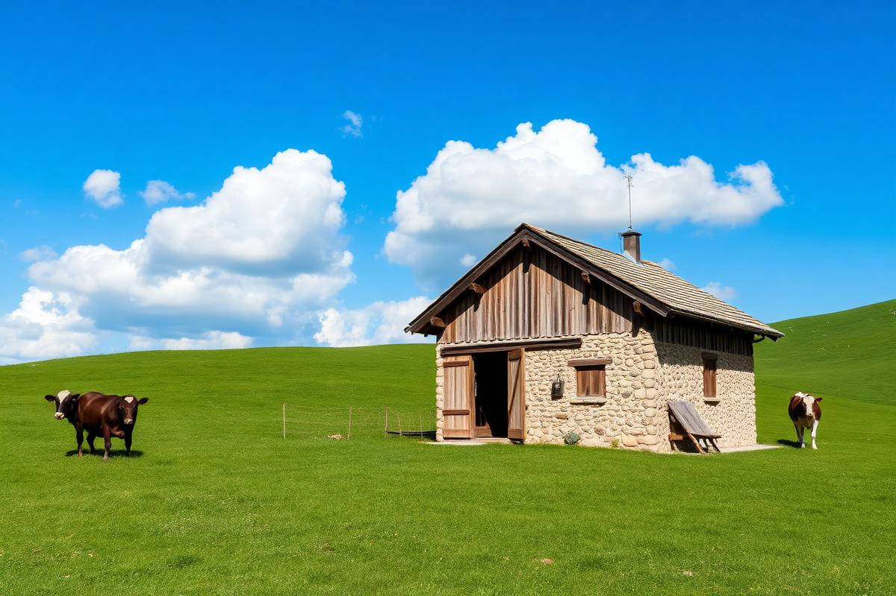
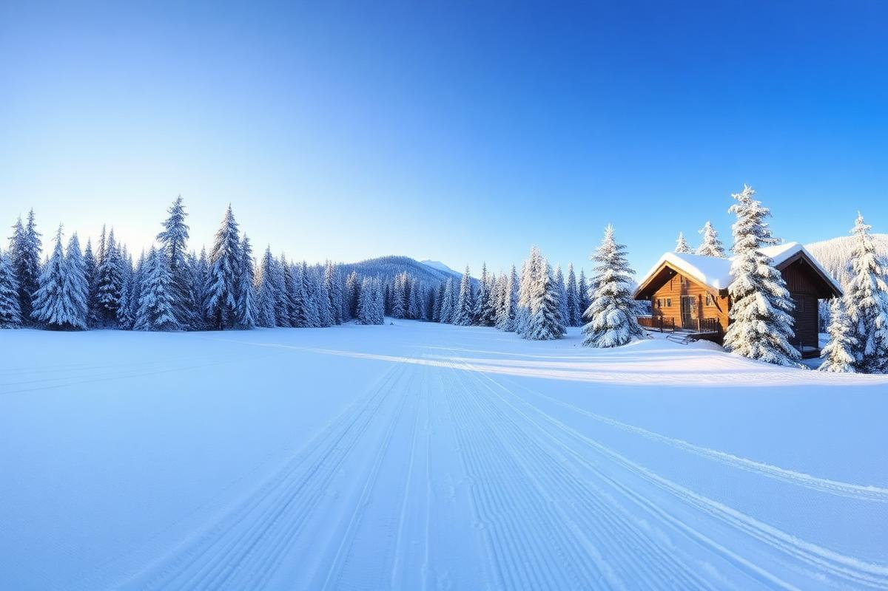

Asiago
1.001m s.l.m.Il capoluogo dell'Altopiano: il Corso, il Sacrario militare del Leiten, l'Osservatorio astrofisico e il formaggio DOP che porta il suo nome. Punto di partenza naturale per ogni escursione.
Altopiano dei Sette Comuni · Veneto
Sentieri, malghe, trincee della Grande Guerra, neve e sagre. Una guida indipendente aggiornata ogni giorno, con Nando che risponde alle tue domande.
Il territorio
Un tavolato calcareo a mille metri sopra la pianura veneta, dove i pascoli d'alta quota confinano con le abetaie e con le trincee del 1916. Asiago è il cuore commerciale, Gallio la porta delle malghe e della neve, Roana il paese cimbro dei ponti e delle contrade. TUTTOALTOPIANO mette insieme quello che serve davvero: sentieri, orari, meteo, sapori e memoria.
Il capoluogo dell'Altopiano: il Corso, il Sacrario militare del Leiten, l'Osservatorio astrofisico e il formaggio DOP che porta il suo nome. Punto di partenza naturale per ogni escursione.
Il paese delle malghe e della neve: da qui si sale a Melette e Campomulo, cuore dello sci di fondo dell'Altopiano, tra pascoli, contrade e trattorie di montagna.
Il comune cimbro per eccellenza, con le frazioni di Mezzaselva, Canove, Camporovere e Cesuna. Qui si conserva la lingua cimbra e il celebre Ponte di Roana.
Terra del patatino di Rotzo, con l'altura di Castelletto e le viste sulla Val d'Astico.
Foglio di percorso
Consigli di oggi · lunedì 23 novembre
Il grande monumento bianco che custodisce oltre 50.000 caduti della Grande Guerra.
La "piccola Finlandia" d'Italia: torbiere, abetaie e praterie a 1.300 metri.
Viadotto storico sospeso sulla Val d'Assa, simbolo dell'ingegneria di inizio Novecento.
Tavole tematiche

Dove assaggiare formaggio e ricotta appena fatti.

Trincee, forti e sacrari da visitare a piedi.

Campomulo, Marcesina e le piste dell'Altopiano.
Meteo e neve in diretta
Aggiornato: 15:15 · Open-Meteo
Dati aggiornati ogni 30 minuti.
Previsioni a 7 giorni →
Assistente locale
Nando è la guida virtuale dell'Altopiano: gli chiedi che sentiero fare con la pioggia, dove mangiare in malga o come arrivare senza auto, e ti risponde in un attimo.
Parla con NandoCalendario
Dicembre · Asiago, Gallio, Canove
31 dicembre · Asiago
Gennaio - febbraio · Campomulo (Gallio)
Febbraio · Roana e frazioni
Maggio - giugno · Pascoli di Gallio ed Enego
Da 1 a 3 giorni
Il giro classico tra Asiago, Gallio e Roana per chi ha solo una giornata.
Percorsi facili, animali, parco avventura e una serata sotto le stelle.
Trincee, sacrari e musei per capire il fronte dell'Altopiano.
Le cime maggiori dell'Altopiano, dormendo tra Gallio e Asiago.
Fondo a Campomulo, discesa al Kaberlaba e ciaspole in Marcesina.
Foliage, mercatini del formaggio e passeggiate senza fatica.